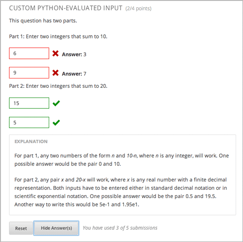
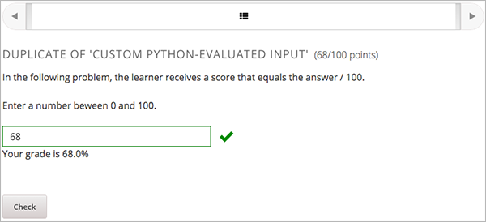

这章介绍你如何直接在一个问题组价中写出你自己的评分器。 请看以下的段落获取更多信息.
在自定义Python评估问题(也叫自定义评分器问题)中,这个评分器使用你创建并嵌入在问题中的对学生的回答进行评分或者提供提示.这些问题可以是任何类型的. 数值输入问题和文本输入问题是最常见的自定义评分器问题。
你可以用:ref:回答标签格式<回答标签格式> 或者 :ref:`脚本标签格式 <脚本标签格式>`创建一个Python评估输入问题.
自定义Python评估输入问题可以包含以下:
脚本标签格式依赖Python脚本中在``<script>``标签中包含的”验证函数”,并且添加``<customresponse>``标签的``cfn``属性来引用该函数。在下面的例子中,``<customresponse>``标签引用了``<script>``中的``test_add_to_ten``和``test_add``函数.
<problem>
<script type="loncapa/python">
def test_add(expect, ans):
try:
a1=int(ans[0])
a2=int(ans[1])
return (a1+a2) == int(expect)
except ValueError:
return False
def test_add_to_ten(expect, ans):
return test_add(10, ans)
</script>
<p>Enter two integers that sum to 10. </p>
<customresponse cfn="test_add_to_ten">
<textline size="10"/><br/>
<textline size="10"/>
</customresponse>
<p>Enter two integers that sum to 20: </p>
<customresponse cfn="test_add" expect="20">
<textline size="40" correct_answer="11" label="Integer #1"/><br/>
<textline size="40" correct_answer="9" label="Integer #2"/>
</customresponse>
<solution>
<div class="detailed-solution">
<p>Explanation</p>
<p>Any set of integers on the line \(y = 10 - x\) and \(y = 20 - x\)
satisfies these constraints.</p>
<p>You can also add images within the solution clause, like so:</p>
<img src="/static/images/placeholder-image.png"/>
</div>
</solution>
</problem>
Important: Python缩进严格. 在 <script> 标签内,``def check_func(expect, ans):`` 行必须没有缩进.
下面的表格解释了在之前的例子中重要的属性和值.
<script type="loncapa/python"> |
指定这个问题包含一个Python脚本. |
<customresponse cfn="test_add_to_ten"> |
指定当学生对这个问题校验答案时，``test_add_to_ten``函数被调用. |
<customresponse cfn="test_add" expect="20"> |
指定当学生对这个问题校验答案是时``test_add``函数被调用并且答案是``20``. |
| <textline size=”10” correct_answer=”3”/> | 这个标签包含``size``, correct_answer, 和 ``label``属性. ``correct_answer``属性是可选的. |
**check**函数接受以下的参数:
expect``是``<customresponse>``标签的``expect 属性的值.如果``expect``不作为一个属性被提供,这个函数必须有另一个方式判断答案是佛偶正确.
answer is either:
- 一个由学生提供的答案的值,如果问题仅仅只有一个回答区域。
- 一个由有序的学生提供的列表,如果这个问题有多个回答区域.
**check**函数可以返回任何以下的值来表明学生的答案是否正确:
True: 表明学生的答案完全正确.
False: 表明学生的答案不正确.所有的回答区域都错.
字典形式 { 'ok': True, 'msg': 'Message' } 如果字典里``ok``变成了`True``所有的答案就都正确了。``msg``展示在所有的回答区域下方,并且可能包含XHTMK标记。更多关于对学习者答案提供局部认证的信息，请查看`Providing Partial Credit for Custom Python-Evaluated
Input Problems`_.
字典形式
{ 'overall_message': 'Overall message',
'input_list': [
{ 'ok': True, 'msg': 'Feedback for input 1'},
{ 'ok': False, 'msg': 'Feedback for input 2'},
... ] }
对于答案包含回答区域的回答最后一个表格是十分有用的.它允许你对每个回答区域单独提供回馈，也允许提供一个适用于整个回答的信息。
下面的示例展示了另外一个校验函数.
def check_func(expect, answer_given):
check1 = (int(answer_given[0]) == 1)
check2 = (int(answer_given[1]) == 2)
check3 = (int(answer_given[2]) == 3)
return {'overall_message': 'Overall message',
'input_list': [
{ 'ok': check1, 'msg': 'Feedback 1'},
{ 'ok': check2, 'msg': 'Feedback 2'},
{ 'ok': check3, 'msg': 'Feedback 3'} ] }
这个函数校验学习者输入``1``到第一个输入框中, 2``输入到第二个输入框中, ``3 到第三个输入框中.它对于每个输入都提供了一个回馈信息,并且每条信息展示在这个问题的下方.
要使用``<script>``标签创建一个Python评估问题:
问题代码:
<problem>
<p>This question has two parts.</p>
<script type="loncapa/python">
def test_add(expect, ans):
try:
a1=int(ans[0])
a2=int(ans[1])
return (a1+a2) == int(expect)
except ValueError:
return False
def test_add_to_ten(expect, ans):
return test_add(10, ans)
</script>
<p>Part 1: Enter two integers that sum to 10. </p>
<customresponse cfn="test_add_to_ten">
<textline size="10" correct_answer="3" label="Integer #1"/><br/>
<textline size="10" correct_answer="7" label="Integer #2"/>
</customresponse>
<p>Part 2: Enter two integers that sum to 20. </p>
<customresponse cfn="test_add" expect="20">
<textline size="10" label="Integer #1"/><br/>
<textline size="10" label="Integer #2"/>
</customresponse>
<solution>
<div class="detailed-solution">
<p>Explanation</p>
<p>For part 1, any two numbers of the form <i>n</i> and <i>10-n</i>,
where <i>n</i> is any integer, will work. One possible answer would
be the pair 0 and 10.</p>
<p>For part 2, any pair <i>x</i> and <i>20-x</i> will work, where <i>
x</i> is any real number with a finite decimal representation. Both
numbers have to be entered either in standard decimal notation or in
scientific exponential notation. One possible answer would be the
pair 0.5 and 19.5. Another way to write this would be 5e-1 and 1.95e1.</p>
</div>
</solution>
</problem>
模板
当学生点击**显示答案**以下的包含答案的模板就出现.
<problem>
<script type="loncapa/python">
def test_add(expect,ans):
a1=float(ans[0])
a2=float(ans[1])
return (a1+a2)== float(expect)
</script>
<p>Problem text</p>
<customresponse cfn="test_add" expect="20">
<textline size="10" correct_answer="11" label="Integer #1"/><br/>
<textline size="10" correct_answer="9" label="Integer #2"/>
</customresponse>
<solution>
<div class="detailed-solution">
<p>Solution or Explanation Heading</p>
<p>Solution or explanation text</p>
</div>
</solution>
</problem>
当学生点击**显示答案**时，以下的模板不会返回答案.如果你不想让你的学生可以看到你的问题的答案,请确保你在问题组件中吧**显示答案**设置成了**Never**.
<problem>
<script type="loncapa/python">
def test_add(expect,ans):
a1=float(ans[0])
a2=float(ans[1])
return (a1+a2)== float(expect)
</script>
<p>Enter two real numbers that sum to 20: </p>
<customresponse cfn="test_add" expect="20">
<textline size="10" label="Integer #1"/><br/>
<textline size="10" label="Integer #2"/>
</customresponse>
<solution>
<div class="detailed-solution">
<p>Solution or Explanation Heading</p>
<p>Solution or explanation text</p>
</div>
</solution>
</problem>
回答标签格式植入Python脚本在``<answer>``标签中,而不是在``<script>``标签使用Python函数, 下面是一个示例.
<answer>
if answers[0] == expect:
correct[0] = 'correct'
overall_message = 'Good job!'
else:
correct[0] = 'incorrect'
messages[0] = 'This answer is incorrect'
overall_message = 'Please try again'
</answer>
Important
Python缩进严格.在``<answer>``标签里,你的代码钱必须没有缩进.
Python脚本与这些全局变量交互:
answers: 学生提供的答案的一个有序列表.比如,如果学生答案是``6``,那么 answers[0]``就等于``6.expect: ``<customresponse>``标签的``expect``属性的值(如果提供了的话).correct: 表明学生的答案是否正确的一个有序字符列表. Valid values are "correct",
"incorrect", 和``”unknown”``. 又可以在脚本中设置这些值.messages: 一个有序列表出现在问题的每个回答框区域的下方的提示.你可以使用这个对学习者提供提示.比如,如果你设置``messages[0] = “The capital of California is Sacramento”``,这个信息就会出现在问题的第一个回答框的下面.overall_message: 出现在问题下面的信息。你可以使用对个对问题进行提示，而不是在独立的回答框下面.<problem>
<p>What is the sum of 2 and 3?</p>
<customresponse expect="5">
<textline math="1" />
</customresponse>
<answer>
if answers[0] == expect:
correct[0] = 'correct'
overall_message = 'Good job!'
else:
correct[0] = 'incorrect'
messages[0] = 'This answer is incorrect'
overall_message = 'Please try again'
</answer>
</problem>
Important: Python缩进严格. 在 <answer> 标签内,``def check_func(expect, ans):`` 行必须没有缩进.
你可以配置一个自定义Python-评估输入问题并对学生的答案添加局部信任.
下面的例子示范了一个允许局部信任的简单问题.学习者的分数等于答案处于100.
下面的代码示范了这个问题的配置.
<problem>
<p>In the following problem, the learner receives a score that equals the
answer / 100. If the learner's answer is greater tahn 100 or less than 0,
the score equals 0.</p>
<script type="loncapa/python">
def give_partial_credit(expect, ans):
ans = float(ans)
if ans > 100 or ans <; 0:
# Assign a score of zero if the answer is less than zero or over 100.
ans = 0
grade = ans/100
return {
'input_list': [
{ 'ok': True, 'msg': 'Your grade is ' + str(ans) + '%', 'grade_decimal':grade},
]
}
</script>
<p>Enter a number beween 0 and 100.</p>
<customresponse cfn="give_partial_credit">
<textline points="100" size="40" label="Ans1"/><br/>
</customresponse>
</problem>
在这个示例中:
- 答案是可以接受的,可以获得部分或全部分数,
'ok': True.- 学生受到信息
Your grade is后面是百分比成,'msg': 'Your grade is ' + str(ans) + '%'.- 学习者的成绩是学习者的答案除于100,
'grade_decimal':grade.
你可以增加这个示例并且引用到你需要分配给学习者部分信任的问题中。
您可以用Python代码创建一个自动以随机的Python评估输入问题
Note
在问题设置中,你必须设置 随机**值(除了**Never )去取得随机变量.更多相关信息，请看:ref:Randomization for more information.
下面的例子示范了在Pyton评估输入问题中使用随机数.
Note
这个示例使用了``random.randint``产生随机数.你可以使用任何标准的Python库达到这个目的。
<problem>
<p>Some problems in the course will utilize randomized parameters.
For such problems, after you check your answer you will have the option
of resetting the question, which reconstructs the problem with a new
set of parameters.</p>
<script type="loncapa/python">
x1 = random.randint(0, 100)
x2 = random.randint(0, 100)
y = x1+x2
</script>
<p>Let (x_1 = $x1) and (x_2 = $x2). What is the value of (x_1+x_2)?</p>
<numericalresponse answer="$y">
<responseparam type="tolerance" default="0.01%" name="tol"
description="Numerical Tolerance"/>
<textline size="10"/>
</numericalresponse>
<solution>
<p><b>Explanation:</b></p>
</solution>
</problem>